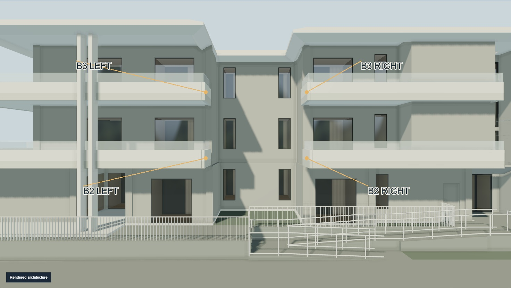
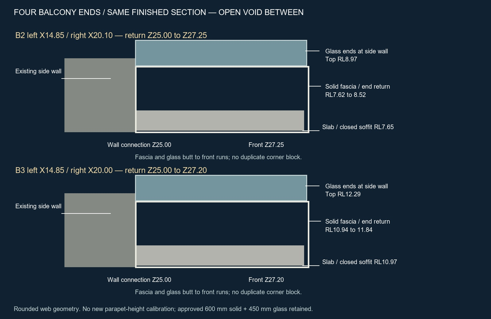
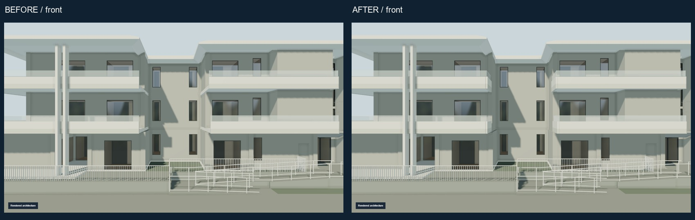
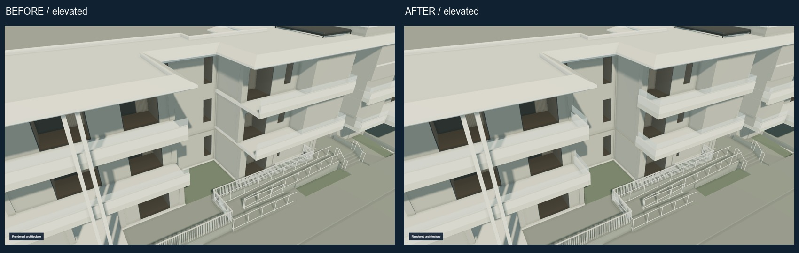
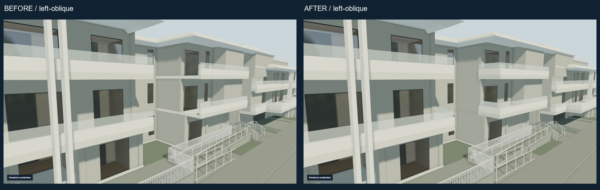
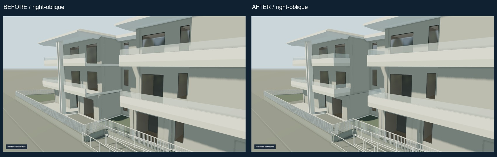
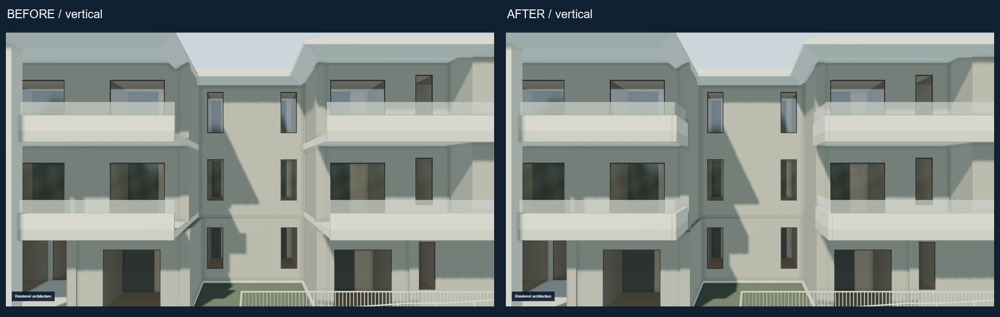
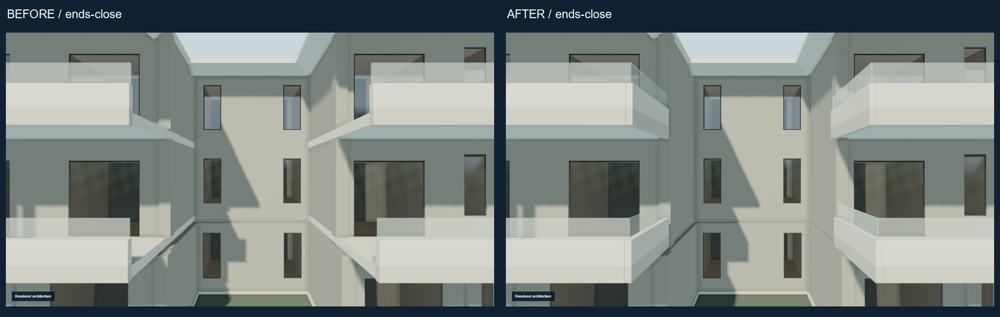
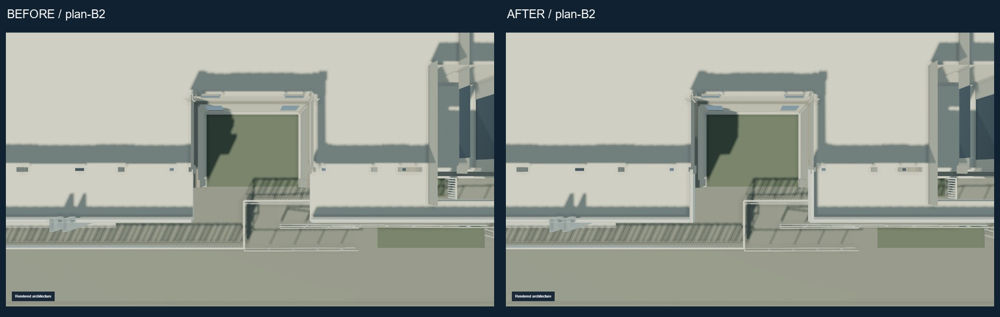
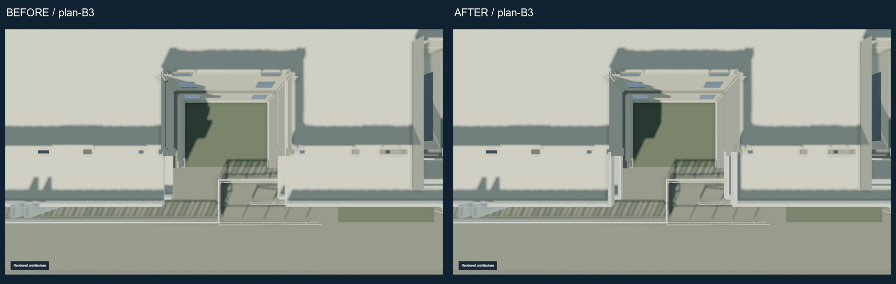

ANNA ATHINA · B-BALCONY-TERMINATION-SUCCESSOR · 2026-09-26
Latest architectural review.
Four supported balcony end returns restored; central recess remains open. Site, service frontage and entrance preserved. The approved ramp, construction journey and cinematic handover are preserved.
Temporary public human-review copy. Not the production Raysons website. Source drawings and original site photographs are deliberately excluded.









